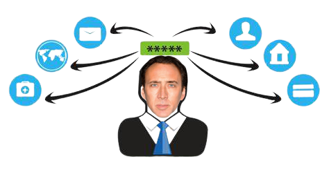

Passwords for Boomers:
An introduction
Created by David Gold
What is this?
Over time, I've noticed that my parents passwords are simple, predictable and guessable. In turn, this makes them hackable.
I created this presentation to introduce them to my favorite password manager.
The old way
I can recall some of the methods of creating passwords:
- The street you grew up on
- Your favorite color
- A pet's name
👇
The New Way
The new prevailing philosophy on password security is to use something called a password manager where you don't know any of your passwords
👇
But first...
Why do we care?
👇
Hacking
By using weak passwords, we open ourselves up to hacking
...but what is hacking?
Is it this?

Not usually, no
Hacking conjures up all sorts of embellishments portrayed in movies
Such as Tom Cruise in Mission Impossible.
What is it really?
The majority of hacking to folks like you and me comes from something called
Simply put, password reuse is reusing the same password across different services
You know... passwords like "password" or the name of your first dog
Bad actors will get access to a list of login credentials and try those combinations across banks, instagram, etc
No, not THAT type of bad actor
An example
In 2014, Yahoo was reportedly hacked to the tune of almost nearly 500 million users
This figure was changed to cover the entirety of their 3 billion users
In 2014, Yahoo was reportedly hacked to the tune of almost nearly 500 million users
This figure was changed to cover the entirety of their 3 billion users
Mr. Bad Actor will then take those credentials and then try them across a bunch a sites.
Even random websites that are unimportant might give Mr. Bad Actor additional information to use for other websites
The numbers
“About 80% of data breaches in 2019 were caused by password compromise.”
“In 2019, 42% of companies were breached by a bad password.”
“The average person reuses each password 14 times.”
Notable Hacked Companies
- Adobe
- AOL
- Apple
- Capital One
- Equifax
- Deloitte
- Ebay
- Marriott
- Microsoft
- Uber
Continued
- Wawa
- Washington Post
- Yahoo
- YouTube
- Zappos
- Yale
- Sony
- Mozilla
- Monster.com
- Home Depot
- Hyatt
...more
- United States Postal Service
- U.S. Army
- U.S. Department of Veteran Affairs
- U.S. Department of Defense
- U.S. law enforcement (70+ agencies)
- National Guard of the United States
- Walmart
- Virgin Media
- Verizon
The list goes on...
Pretty scary huh?
It should! We humans are fallable creatures.
Passwords
Remembering our passwords is an outdated practice.
Information moves too quickly and too often for it to be sustainable.
Enter OnePassword
The industry leader in something called a password manager.
No more writing down passwords
With OnePassword, you can now have an app create your passwords for you
Create
OnePassword can generate a password for you once you sign up for something

These passwords can (and should) be impossible to remember, memorize or guess
Save
OnePassword then saves these passwords into their app so that you don't have to try to remember each one

You can even securely save important documents, notes or other information.
Login Process
You're then given a shortcut so that when you need to login, you just press the keys on your keyboard. Your login and password are automatically filled into their appropriate fields
Shortcuts
| Computer | Controls |
|---|---|
| PC | ⌘ + / |
| Mac | CTRL + ALT + / |
This can be sync'd across all platforms so you can use it on your phone, tablet, etc
If this starting to feel like an ad, it isn't meant to be
I just think OnePassword has struck a great balance between usability, accessibility and affordability.
I'm an unpaid evangelist. I make negative money off this since I'm a paying customer
OnePassword is just one of many in this growing industry. There are plenty of others such as LastPass, Dashlane and Bitwarden
Even Dropbox has been testing one hoping to get in on the action
I hope you appreciated this presentation, Boomer
Before I leave you, I want to give you some final tips
Tip #1: Use a password manager
We get hacked because we're human. Let technology handle secure information for you. They're better at it
Tip #2: Be cautious over email
Bad actors can spoof their emails to make it look like it's coming from a legitimate source. Right click on senders contact names to verify that it's coming from a proper source.
As I was making this, my sister sent me a text asking if this email was legitimately from Netflix
It wasn't.
Presumably, the "reset password" link takes you to some random website in hopes of stealing your password
Tip #3: Stay real on social media
Websites like Facebook and LinkedIn will prevent people who you aren't connected with from seeing your entire profile
Hackers might create fake profiles and try to add you in attempt to gain access to more information
Exercise caution before connecting with somebody.
If you have reason to believe it might be a fake account, call or email that friend to verify it is in fact them.
Tip #4: Be careful before downloading anything from the web
If sites have pop ups asking you to download anything, don't do it
Many nefarious sites have fake pop ups in hopes of downloading malware (bad!) onto your computer. You can learn more about how to spot those here
Tip #5: Turn on automatic security updates
Updates can happen for many reasons, and it's not always security related. But it's best to get updates as often and early as they're available
Tip #6: Be skeptical on the phone
It's unwise to give personal information out over the phone. Generally speaking, I'd suggest against it.
I never answer any unknown numbers. If it's important they'll leave a message. If I suspect it might require secure information, I can atleast vet their callback number.
Tip #7: Use 2-factor authentication
I could make another whole presentation on 2-factor authentication (2FA), but I won't. Click here to learn more about what it is
The end
If you'd like to learn more about the project, you can see the repo
Any questions or concerns? Email me